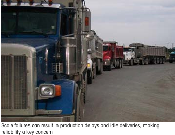

Apa arti Skala bagi bisnis Anda
Pembeli timbangan truk yang terinformasi mempertimbangkan lebih dari sekadar harga pembelian awal saat membandingkan sistem timbangan. Meskipun harga penting, keakuratan dan keandalan timbangan akan berdampak langsung pada bisnis pemilik selama beberapa dekade mendatang. Memilih timbangan yang andal dapat menurunkan biaya perawatan dan perbaikan selama bertahun-tahun. Memilih timbangan yang sangat akurat melindungi terhadap kerugian produk atau laba yang tersembunyi karena kesalahan timbangan.
Biaya Proyek Skala Truk
Saat Anda membiasakan diri dengan berbagai komponen pemasangan timbangan truk baru, Anda dapat mulai melihat bagaimana komponen-komponen tersebut membentuk total biaya proyek. Mintalah penawaran harga terperinci kepada calon pemasok. Di sini, kami menunjukkan contoh biaya umum yang terlibat dalam pemasangan timbangan truk berukuran penuh.
35% Jembatan timbang
20% Load Cell Sistem
20% Pondasi
15% Pengiriman & Pemasangan
10% Terminal & Perangkat Lunak / Software
Biaya Kepemilikan
Saat membandingkan timbangan yang berbeda, pembeli yang terinformasi dapat melihat lebih dari sekadar harga pembelian. Menghitung total biaya kepemilikan selama masa pakai timbangan melibatkan faktor waktu henti, biaya perbaikan, dan biaya servis. Waktu henti timbangan memiliki nilai kualitatif dan kuantitatif. Biasanya keputusan untuk membeli timbangan truk didasarkan pada ekonomi dan nilai produk di truk tersebut. Alasan memiliki timbangan truk bermuara pada penentuan nilai bersih:
1. Ketahui nilai transaksi, atau nilai kargo kiriman Anda yang masuk atau keluar.
2. Verifikasi nilai kiriman yang masuk. Merupakan bisnis yang baik untuk memeriksa ulang keakuratan timbangan kapal. Ini juga merupakan kesempatan terbaik Anda untuk mengidentifikasi kerugian, kebocoran, atau penipuan langsung.
3. Kontrol inventaris. Timbangan truk Anda adalah titik awal kontrol inventaris dan sumber daya yang sangat diperlukan untuk pengukuran massal berikutnya untuk pembelian, penyeimbangan material, dan audit.
Anda memerlukan timbangan truk untuk memastikan Anda mengirimkan barang dalam jumlah maksimal tanpa melebihi batas berat jalan raya.
Jika skala Anda turun, situs Anda kehilangan kemampuannya untuk menjalankan fungsi-fungsi ini. Itu memiliki arti yang berbeda untuk setiap situs, tetapi luangkan waktu untuk mempertimbangkan nilai waktu henti bagi bisnis Anda. Mungkin lebih substansial daripada yang Anda pikirkan.
Ongoing Ownership Costs
Biaya kepemilikan dapat dikaitkan dengan situasi di mana suatu komponen mengalami kegagalan, atau ketika skala memerlukan penyesuaian ulang atau sertifikasi ulang. Beberapa komponen lebih mungkin menyebabkan masalah tersebut daripada yang lain dalam sistem skala konvensional.
76% Load Cell Sistem
10% terminal
5% Jembatan timbang
5% Perangkat Lunak / Software
5% Aksesoris
Biaya selama masa pakai skala
Meskipun banyak perusahaan memfokuskan presentasi penjualan mereka pada jembatan timbang, jembatan timbang biasanya merupakan barang yang perawatannya rendah jika dibandingkan dengan bagian lain dari timbangan. Banyak pembeli timbangan truk ingin lebih memfokuskan diskusi penjualan pada sistem sel beban setelah mereka mengetahui bahwa sistem Load Cells yang lama telah menjadi sumber utama biaya perawatan dan perbaikan yang berkelanjutan serta waktu henti. Oleh karena itu, memilih sistem Load Cells yang tepat memiliki potensi terbesar untuk menghemat uang pemilik selama masa pakai timbangan.
Keandalan
Sulit untuk menganggap timbangan baru tidak dapat diandalkan karena Anda tidak menduga peralatan baru akan rusak. Namun, timbangan truk menghadapi sejumlah tantangan. Beberapa timbangan pada akhirnya perlu sering diperbaiki, sementara yang lain jarang mengalaminya. Karena waktu henti timbangan dapat merugikan operasi bisnis, pikirkan keandalannya terlebih dahulu. Desain dan fitur yang melindungi terhadap kegagalan timbangan dapat sepadan dengan investasi awal untuk memberi Anda ketenangan pikiran di kemudian hari.
Causes of Scale Downtime
Daftar berikut mencantumkan sumber historis paling umum untuk perbaikan kerak pada semua merek dan model. Bagian selanjutnya dari panduan ini akan menjelaskan banyak komponen dan situasi ini secara lebih rinci.
Dampak lingkungan
• Kerusakan akibat petir
• Embun beku, kerusakan akibat es, atau penumpukan puing
• Kerusakan akibat air
Kotak sambungan dan sambungan kabel
• Kelembapan di kotak sambungan
• Sambungan yang gagal di kotak sambungan
• Kerusakan pada kabel Load Cells (tikus, putus secara tidak sengaja, dll.)
Load Cells
• Masuknya kelembapan yang merusak komponen internal
• Kerusakan fisik dan korosi
• Keausan fisik akibat ketidaksejajaran atau perawatan pencegahan yang buruk
• Kebocoran cairan hidrolik (sistem hidrolik)
Kalibrasi atau sertifikasi ulang diperlukan
• Sertifikasi W&M telah kedaluwarsa
• Perubahan komponen utama
• Perubahan lokasi (timbangan portabel)
• Ketidaksejajaran jembatan timbang yang memerlukan penyesuaian
Kegagalan skala dapat mengakibatkan penundaan produksi dan pengiriman yang tidak terlaksana, sehingga keandalan menjadi perhatian utama.
Perlindungan dari Tantangan Lingkungan
Banjir dan Kelembaban
Lokasi yang sering terkena hujan, salju, es, dan terutama banjir harus memberikan perhatian khusus pada perlindungan timbangan dari kerusakan akibat air. Air dapat menyebabkan jembatan timbang berkarat, tetapi lebih sering dapat merusak komponen seperti Load Cells dan kotak sambungan.
Untuk mencegah kerusakan, Load Cells dapat menawarkan segel kedap udara (kedap udara) berkat teknologi manufaktur presisi, seperti pengelasan laser. Selain itu, Load Cells dan sambungan kabel dapat memiliki peringkat kode Ingress Protection (IP) untuk mencatat ketahanannya terhadap masuknya debu dan air. Tingkat perlindungan ditandai dengan angka dua digit. Misalnya:
• IP68
Angka 6 menunjukkan bahwa penutup kedap debu, memberikan perlindungan menyeluruh dari debu. Angka 8 menunjukkan bahwa komponen cocok untuk direndam dalam air secara terus-menerus.
• IP69K
Peringkat ini menunjukkan bahwa penutup cocok untuk aplikasi pencucian bertekanan tinggi dan suhu tinggi
Namun, komponen yang paling rentan terhadap kerusakan akibat air dan kelembapan lainnya biasanya adalah kotak sambungan. Kotak sambungan mencakup panel akses yang sulit disegel.
Banjir besar merendam timbangan truk ini di sebuah pabrik kimia di Thailand selama berminggu-minggu. Berkat perlindungan air yang unggul, para operator merasa takjub ketika timbangan tersebut terus beroperasi setelah air surut.
Situasi ekstrem seperti banjir dapat dengan mudah menunjukkan pentingnya perlindungan terhadap air. Timbangan dengan perlindungan yang tidak memadai mungkin memerlukan penggantian sejumlah komponen yang mahal. Dalam kasus lain, komponen harus benar-benar kering dan diservis sebelum timbangan dapat berfungsi kembali. Namun, beberapa timbangan telah dirancang dengan mempertimbangkan kondisi seperti banjir. Dengan perlindungan yang tepat, timbangan bahkan dapat bertahan selama berminggu-minggu dalam perendaman total tanpa banyak efek yang terlihat pada kinerja setelahnya.
Suhu
Perubahan suhu juga dapat menimbulkan tantangan pada timbangan truk. Seiring waktu, siklus termal dapat menyebabkan timbangan memerlukan kalibrasi dan servis yang lebih sering. Beberapa sel beban dapat mengalami fluktuasi sinyal karena suhu, yang menyebabkan akurasi timbangan menurun.
Timbangan truk ini mampu bertahan pada suhu terdingin di Bumi di Stasiun Mcmurdo di Antartika.
Lightning
Sistem Pasif dan Aktif
Petir merupakan salah satu risiko terbesar bagi pemilik timbangan truk. Jika timbangan rusak akibat sambaran petir, biaya perbaikannya bisa sangat besar. Jika ditambahkan dengan waktu henti yang terkait dengan perbaikan besar, dampaknya terhadap bisnis bisa sangat signifikan. Itulah sebabnya proteksi petir menjadi topik hangat di kalangan pembeli dan produsen timbangan kendaraan.
Sebagian besar penyedia timbangan truk menawarkan sistem penimbangan dengan berbagai fitur pentanahan. Sistem pentanahan titik tunggal dengan pelindung lonjakan arus dapat menjadi garis pertahanan pertama untuk timbangan dan rumah timbangan. Sistem pasif ini menawarkan beberapa tingkat perlindungan, tetapi seberapa besar? Sambaran petir bervariasi dalam hal daya, lokasi, dan lainnya. Itu berarti bahwa pentanahan saja menawarkan perlindungan yang tidak lengkap dari variabel yang terkait dengan sambaran petir.
Sistem aktif mampu mengalihkan arus sambaran petir dari komponen utama. Beberapa timbangan dilengkapi dengan perangkat pelindung bawaan, seperti tabung pelepasan berisi gas di kotak sambungan (jika dilengkapi). Selain itu, timbangan lain menawarkan penekan tegangan transien; yaitu pemutus arus yang bereaksi terhadap panas yang dihasilkan oleh lonjakan daya.
Jika bekerja sama, fitur-fitur tersebut dapat melindungi timbangan Anda dari kerusakan, bahkan dari sambaran petir langsung. Namun, menguji sistem tersebut untuk memastikan kinerjanya sesuai rancangan bisa jadi sulit dan mahal. Karena itu, hanya sedikit produsen yang menguji sistem proteksi petir mereka.
Load Cells POWERCELL® PDX® yang terhubung ke terminal IND780 selama uji pencahayaan
Validasi Proteksi Petir
Cara terbaik untuk memvalidasi sistem proteksi petir timbangan truk adalah di laboratorium petir. Laboratorium petir sering digunakan untuk menguji komponen pesawat penting dengan menyetrumnya dengan tingkat tegangan dan arus listrik yang sama seperti yang terlihat pada sambaran petir. Laboratorium ini pada dasarnya menciptakan petir buatan manusia.
Misalnya, METTLER TOLEDO telah berhasil memvalidasi efektivitas perlindungan StrikeShield™ pada Load Cells POWERCELL® dan terminal timbangan di fasilitas tersebut. Di sana, komponen terkena arus 80.000 ampere – dua kali arus sambaran petir biasa – dan sistem perlindungan berfungsi sebagaimana mestinya. Dalam kasus ini, sistem langsung mati, mengalihkan arus sambaran petir, lalu melakukan boot ulang.
Video: Lightning protection tests
Lihat video tentang cara METTLER TOLEDO menguji sistem proteksi petir di www.mt.com/LightningTest
Garansi Petir
Sebagian besar pemasok timbangan menawarkan beberapa jenis garansi untuk menanggung kerusakan akibat sambaran petir. Banyak yang diprorata berdasarkan usia timbangan. Pastikan garansi tersebut tertulis dan dipahami oleh semua pihak yang terlibat. Apakah garansi hanya mencakup suku cadang pengganti? Bagaimana dengan biaya perjalanan dan tenaga kerja untuk perbaikan? Ingatlah bahwa meskipun garansi mencakup penggantian suku cadang yang rusak, Anda tetap harus menanggung biaya penghentian yang tidak direncanakan saat timbangan diperbaiki.
Pastikan untuk menanyakan tentang garansi pada timbangan yang Anda pertimbangkan. Bahkan garansi terbaik di dunia tidak dapat mencegah sambaran petir, jadi penting untuk mengetahui bagaimana timbangan Anda akan terpengaruh jika tersambar petir.
Implikasi Bisnis: Keterlambatan dan Biaya Perbaikan
Apa pun penyebabnya, jika timbangan Anda rusak, Anda harus membuat pilihan. Anda dapat melanjutkan operasi hanya dengan memperkirakan berat (jika itu sah untuk aplikasi Anda). Anda mungkin dapat mengirim truk Anda ke timbangan lain, tergantung seberapa jauh jaraknya. Atau, Anda dapat menghentikan operasi hingga timbangan kembali beroperasi. Bergantung pada bagaimana Anda menggunakan timbangan, situasi ini dapat menyebabkan sejumlah besar produk tidak tercatat, operasi tertunda, pendapatan hilang, dan biaya tambahan.
Hitung biaya yang harus dikeluarkan untuk menghentikan penggunaan timbangan selama dua hari, satu hari, dan satu jam. Kemudian, saat waktunya tiba, mintalah masing-masing calon pemasok timbangan untuk membahas keandalan dan perbaikan darurat, terutama waktu tempuh dan lamanya panggilan darurat hingga layanan pulih sepenuhnya. Tanyakan berapa lama waktu yang dibutuhkan untuk menguji dan mengkalibrasi timbangan, beserta interval yang disarankan antara pengujian.
Mencegah Downtime yang Tidak Direncanakan
Perawatan pencegahan sangat dianjurkan untuk kinerja optimal, seperti halnya dengan hampir semua peralatan utama. Hal itu dapat mencakup penghentian penggunaan timbangan untuk layanan terjadwal pada interval yang telah ditentukan sebelumnya.
Sistem perlindungan kegagalan tersedia di beberapa timbangan. Fitur pemantauan ini mencatat kinerja berbagai komponen dan dapat memperingatkan operator tentang ketidakkonsistenan apa pun, biasanya sebelum timbangan menghadapi kesalahan atau kegagalan yang melumpuhkan. Manfaat peringatan ini adalah kemampuan untuk menjadwalkan panggilan layanan pada waktu yang tepat, daripada membayar tarif premium untuk layanan darurat saat timbangan tidak dapat dioperasikan lagi. Waktu henti yang direncanakan ini jelas lebih baik daripada waktu henti yang tidak direncanakan.
Ketepatan
Apa yang Perlu Anda Ketahui Tentang Akurasi
• Akurasi memengaruhi bisnis Anda.
• Timbangan truk konvensional mungkin tidak seakurat yang Anda kira.
• Toleransi kesalahan timbangan yang sah untuk diperdagangkan tidak melindungi Anda dari kerugian laba.
• Tidak semua timbangan menawarkan tingkat akurasi yang sama.
Akurasi timbangan dapat dengan mudah dianggap biasa saja, tetapi jika Anda membeli atau menjual barang dengan menggunakan timbangan truk, akurasi sangat penting untuk transaksi Anda. Ini termasuk margin laba, tingkat inventaris, dan manajemen kualitas.
Memahami Toleransi Kesalahan Hukum
Dalam aplikasi komersial atau legal untuk perdagangan, timbangan harus diperiksa, diuji, dan disertifikasi ulang secara berkala oleh otoritas timbangan dan ukuran. Banyak pemilik timbangan (dan bahkan penyedia timbangan) berasumsi bahwa sertifikasi ulang ini akan memberi mereka akurasi yang memadai. Kenyataannya, toleransi kesalahan untuk persyaratan minimum bisa signifikan. Itu berarti bahkan timbangan yang baru disertifikasi sebenarnya masih bisa merugi bagi pemiliknya setiap kali melakukan penimbangan.
Ukuran toleransi akurasi legal untuk timbangan Anda bergantung pada lokasi Anda dan apakah wilayah Anda mengakui standar NIST/NTEP atau OIML. Toleransi merupakan fungsi dari persentase kapasitas timbangan yang digunakan, dan ukuran penambahan berat timbangan. Di sini, kapasitas timbangan adalah nilai berat maksimum yang dikonfigurasikan untuk terminal dan Load Cells, bukan kapasitas maksimum fisik struktur. Ini adalah perbedaan penting yang akan kita bahas lebih rinci nanti.
• Toleransi Akurasi NIST/NTEP
Buku Pegangan 44 menguraikan toleransi berbasis langkah yang meningkat setiap 5% tambahan kapasitas timbangan yang digunakan.
• OIML Accuracy Tolerance
Ada berbagai tingkat spesifikasi akurasi yang ditetapkan oleh OIML: C3, C4, dan C6 terlihat pada timbangan truk. Sebagian besar aplikasi timbangan truk adalah C3 (digunakan pada bagan di atas). Persentase yang sangat kecil dari timbangan truk adalah C6, yang memberikan toleransi akurasi yang lebih ketat.
Produk atau Kerugian Keuntungan
Jika Anda mempertimbangkan biaya barang Anda, 30 kg. (80 lbs.) bisa menjadi nilai yang cukup besar jika dikalikan dengan volume truk yang Anda proses setiap hari, minggu, atau tahun. Banyak pemilik bisnis terkejut saat mengetahui berapa banyak truk penuh berisi barang yang mereka berikan karena kesalahan timbangan.
Di masa lalu, pemilik timbangan menerima toleransi akurasi minimum ini karena toleransi tersebut mencerminkan kemampuan teknologi timbangan sebelumnya. Selama bertahun-tahun, timbangan kendaraan dirancang hanya untuk memenuhi persyaratan hukum minimum. Namun, beberapa sistem timbangan modern mampu mempertahankan tingkat akurasi yang lebih tinggi. Kini, terdapat fitur akurasi yang jelas antara berbagai merek dan model timbangan truk.
Ketahuilah juga bahwa timbangan dikalibrasi ulang secara berkala agar berada dalam toleransi ini, tetapi keakuratan banyak timbangan akan bergeser keluar dari rentang tersebut seiring waktu. Itulah sebabnya kalibrasi ulang berkala diperlukan. Ini juga berarti bahwa jumlah kesalahan pada timbangan di antara kalibrasi dapat dengan mudah lebih besar dari spesifikasi ini. Tetapi mengapa teknisi timbangan tidak mengkalibrasi timbangan hingga kesalahan nol? Itu karena banyak sistem yang sulit dan memakan waktu untuk disetel dengan baik.
Singkatnya, dampak akurasi timbangan sangatlah penting bagi bisnis. Lokasi yang memproses truk atau barang bernilai besar dalam jumlah besar (atau yang berencana untuk melakukannya di masa mendatang) harus sangat menyadari akurasi timbangan mereka.
Video: Truck Scale Accuracy
Lakukan perhitungan cepat untuk melihat kesalahan hukum apa yang dapat merugikan Anda. Kemudian tonton video tentang cara kerja sistem METTLER TOLEDO untuk memastikan keakuratan di www.mt.com/truckload